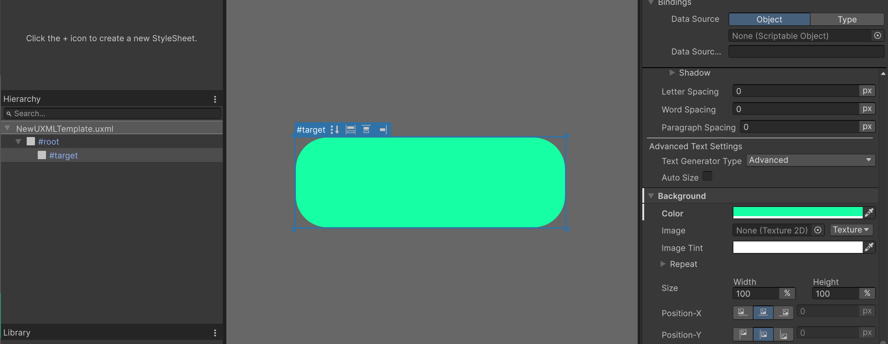
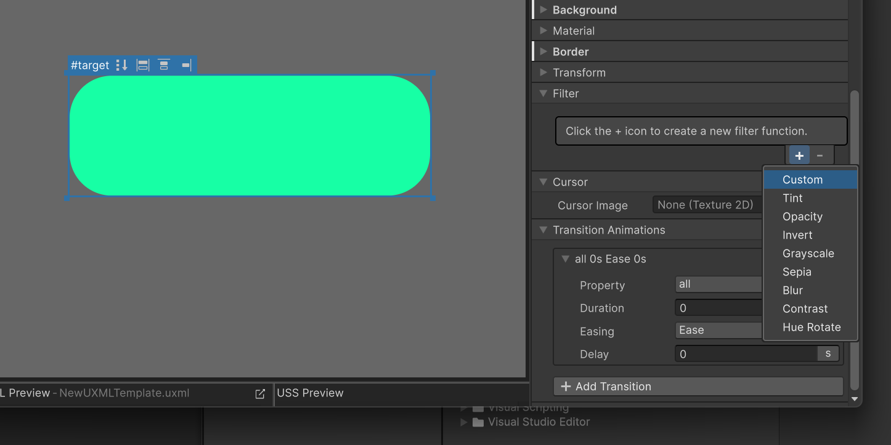
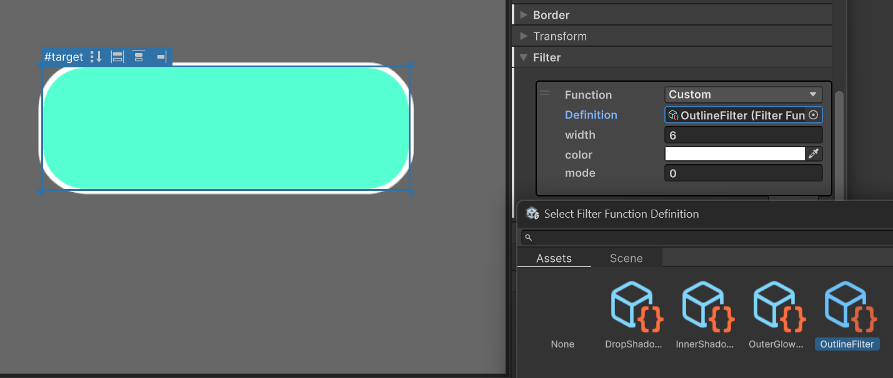

Getting Started
This guide explains the basic workflow for adding and configuring an Outline filter in UI Builder.
Prepare an element
- Draw an element with a
VisualElementin UI Builder, or prepare aLabelthat needs an outline. - Select the target element in the Hierarchy.

Add the Outline filter
- Open the Filter section in the Inspector.
- Click the + button to create a new filter (Custom).

- Select
Outline Filterfrom the Definition list.
Configure the Outline
- Change
widthto adjust the outline thickness. - Set the desired outline color with
color. - Use
modeto choose where the outline is drawn.
| mode | Position | Description |
|---|---|---|
0 |
Outside | Draws the outline outside the element edge. |
1 |
Center | Draws the outline centered on the element edge. |
2 |
Inside | Draws the outline inside the element edge. |
UI Builder displays the result directly in the Canvas as the settings change.